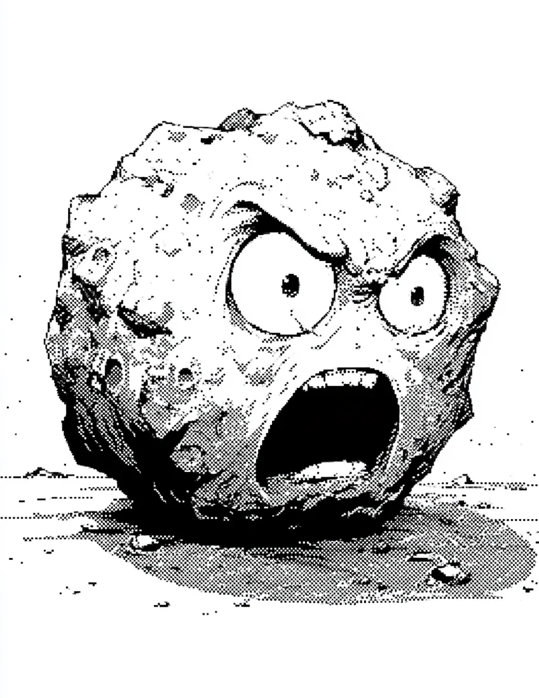

마을 끝 언덕에 돌쇠가 있었다. 아무도 그 바위에 가까이 가지 않았다. 밤마다 비명을 질렀기 때문이다.
[At the edge of the village, on a hill, there was Dolsoe. Nobody went near that rock. Because it screamed every night.]
“저 바위는 저주받은 돌이야.” 마을 사람들은 아이들에게 늘 그렇게 말했다. “절대 가까이 가지 마.”
[”That rock is a cursed stone.” The villagers always told their children. “Never go near it.”]
어느 가을, 낯선 나그네가 마을에 도착했다. 젊고 마음이 따뜻한 사람이었다. 그는 밤에 언덕에서 들려오는 비명을 듣고 잠을 이룰 수 없었다.
[One autumn, a stranger arrived in the village. A young person with a warm heart. He heard the screams coming from the hill at night and couldn’t sleep.]
다음 날 아침, 그는 언덕에 올라갔다. 바위 앞에 서자, 바위의 표면에 일그러진 얼굴이 나타났다.
[The next morning, he climbed the hill. When he stood before the rock, a twisted face appeared on its surface.]
“제발...” 돌쇠가 말했다. “나 좀 도와줘.”
[”Please...” Dolsoe said. “Help me.”]
나그네는 놀랐지만 도망치지 않았다. “무슨 일이야?”
[The traveler was startled but didn’t run. “What happened?”]
“나는 백 년 전에 이 산의 신을 화나게 했어. 신이 나를 바위로 만들었지. 매일 밤 고통 때문에 소리를 지르는 거야.”
[”A hundred years ago, I angered the god of this mountain. The god turned me into a rock. Every night I scream because of the pain.”]
나그네의 눈에 동정이 가득 찼다. “어떻게 하면 저주를 풀 수 있어?”
[The traveler’s eyes filled with pity. “How can the curse be broken?”]
돌쇠는 잠시 침묵했다. 그리고 떨리는 목소리로 말했다. “누군가 자기 손으로 나를 깨뜨려야 해. 그래야 내 영혼이 자유로워져.”
[Dolsoe was silent for a moment. Then, in a trembling voice, he said. “Someone must break me with their own hands. Only then will my soul be set free.”]
나그네는 마을에 내려가 큰 망치를 빌려왔다. 그리고 돌쇠 앞에 섰다.
[The traveler went down to the village and borrowed a large hammer. Then he stood before Dolsoe.]
“고마워.” 돌쇠가 미소를 지었다. 처음으로 비명이 아닌 웃음이었다.
[”Thank you.” Dolsoe smiled. For the first time, it was laughter, not a scream.]
나그네는 망치를 높이 들어 올렸다. 그리고 온 힘을 다해 내리쳤다.
[The traveler raised the hammer high. And brought it down with all his strength.]
바위가 산산조각 났다. 조각 사이에서 한줄기 연기가 피어올라 하늘로 사라졌다.
[The rock shattered into pieces. A wisp of smoke rose from the fragments and vanished into the sky.]
나그네는 웃었다. 좋은 일을 했다고 생각했다.
[The traveler smiled. He thought he had done a good deed.]
그날 밤, 나그네의 발이 움직이지 않았다. 다리가 무거웠다. 피부가 회색으로 변했다.
[That night, the traveler’s feet wouldn’t move. His legs were heavy. His skin turned grey.]
마을 사람들은 다음 날 아침, 언덕 위에 새로운 바위가 서 있는 것을 발견했다.
[The next morning, the villagers found a new rock standing on the hill.]
그리고 그날 밤부터, 비명이 다시 시작되었다.
[And from that night on, the screaming began again.]